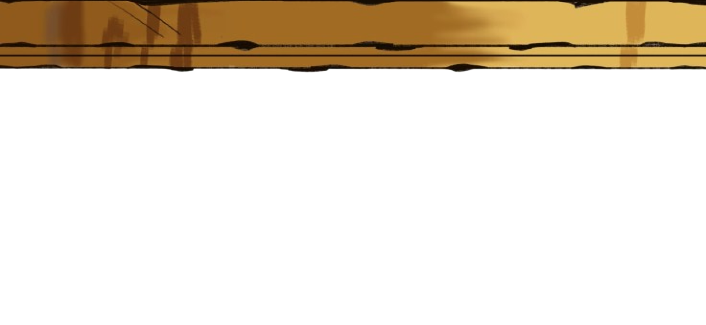
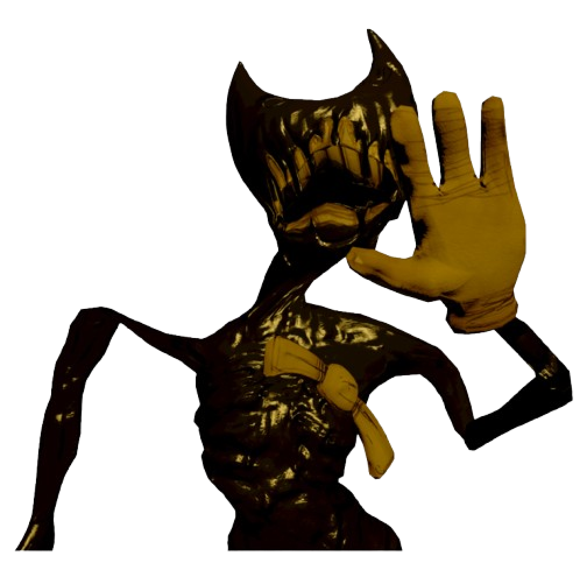

Pessimo!
0/10 acertos
Parece que você conhece o universo de Bendy and the Ink Machine, mas ainda não escapou completamente da tinta!
Talvez o projetor tenha falhado, ou o Ink Demon tenha confundido suas memórias…
Você até tenta sobreviver aos corredores da Joey Drew Studios, mas alguns detalhes importantes acabaram se perdendo no caminho. Ainda falta descobrir segredos, personagens e acontecimentos que só os verdadeiros fãs conseguem lembrar.
Mas calma! Todo fã começa em algum lugar.
Que tal voltar aos capítulos, ouvir as fitas novamente e enfrentar mais uma vez os monstros de tinta? Talvez na próxima tentativa você prove que nasceu para fazer parte desse estúdio sombrio.